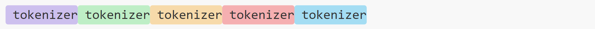
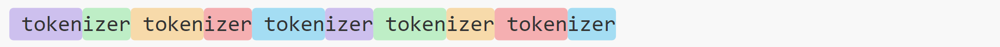
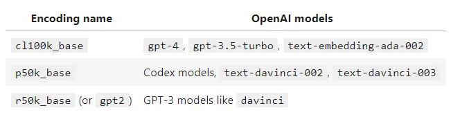

Understanding Tokenization: How Are ChatGPT Token Calculated?
By Split Prompt · 2 min read · 23 Sep 2023
When you interact with ChatGPT, every piece of information exchanged is first broken down into small units called tokens. Understanding how tokens are calculated is essential, especially for monitoring API usage and ensuring interactions stay within token limits.
How ChatGPT Tokenization Works
- Base Representation: All text is first represented in terms of Unicode characters, allowing for broad recognition across diverse languages
- Byte Pair Encoding (BPE): BPE works by iteratively merging the most frequent pairs, creating a dictionary of common Unicode character sequences, known of as tokens
Differences Between Encoding Methods
The exact number of tokens calculated is dependent on the encoder used. Modern encoders contain more tokens, for instance, cl100k_base has approximately 100,000 tokens. This reduces the number of tokens in a given text, as rarer character combinations are detected and accounted for.
cl500k_base
p50k_base / r50k_base
Another key difference between encoders is the handling of whitespace. The older r50k_base encoder is incredibly inefficient as it counts every space as a new token.
Calculating Token Counts - What Encoder Do I Use?
Before considering the below breakdown it is important to note that it only applies to the API model variants. The models available at chat.openai.com appear to use the r50k_base encoder (more info here).
You can use this webpage here to count tokens based on the encoding method of your choice. It uses a JavaScript port of OpenAI's tiktoken called gpt-tokenizer.
If you want a more simple way of estimating token count, OpenAI recommends multiplying the number of words by 0.75 as an approximation.
Exceeding Token Limits
Due to the inherent design of ChatGPT, there is a token limit when processing inputs, which means especially lengthy prompts will be rejected by the model. To overcome this limitation, we created Split Prompt. This tool effectively divides longer prompts into manageable chunks, ensuring that the flow of conversation remains smooth and coherent.